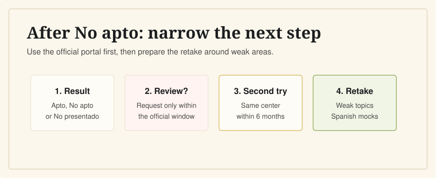

What Happens If I Fail the CCSE?
Last verified: June 5, 2026
A failed CCSE result is not the end of the process. In many cases, one paid registration includes a second opportunity under Instituto Cervantes conditions.

Instituto Cervantes says a candidate who is No apto or No presentado on the first attempt has the right to a second registration without paying again, under its conditions. The second opportunity must be requested after results are published and follows official timing and center rules.
First, Check the Official Result
CCSE results are normally communicated about 20 days after the exam through the private Instituto Cervantes exam portal. The certificate shows a global result: Apto, No apto, or No presentado. It does not show your exact score.
Your Second Opportunity
As verified on June 5, 2026, the Instituto Cervantes FAQ says that a candidate who receives No apto or No presentado in the first convocatoria has the right to a second registration for the CCSE without paying the exam fee again, according to the official conditions. The FAQ also says the second opportunity must be in the same exam center and within a maximum of six months from the exam date.
Because dates, centers, and registration details are operational rules, use your private Instituto Cervantes portal and official support channels before making plans.
Can You Ask for a Review?
Instituto Cervantes says candidates who are No apto can submit one review request within the established period through the private portal. A review is not a new exam and should not replace preparing for a retake if you need one.
How To Prepare for the Retake
The official CCSE exam itself is in Spanish. For a retake, use English to understand missed concepts, then drill the Spanish wording before exam day.
- Do not restart from zero; identify which task areas felt weakest.
- Practice in Spanish, not only with English translations.
- Review explanations for wrong answers so you know the idea, not just the letter.
- Take timed 25-question mocks until your score is comfortably above 15.
Related Guides
- How many questions can I miss?
- How hard is the CCSE?
- How long should I study?
- Timeline for Spanish citizenship
Sources
- Instituto Cervantes: CCSE results, certificates, and second opportunity
- Instituto Cervantes: CCSE FAQ on retakes and timing
- Instituto Cervantes: CCSE dates and registration changes
Use CCSE English to review missed topics with Spanish and English side by side before your retake. It is independent and not official.